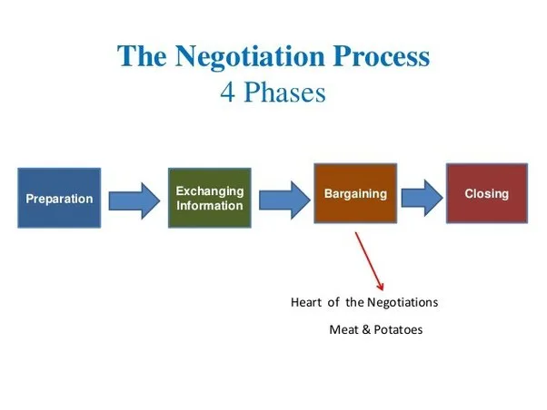

Expanded Nursing Uganda Explanation
Negotiation Skills should be reviewed through safe maternal and newborn assessment, early recognition of danger signs, respectful communication and timely referral. Connect the definition to vital signs, bleeding, fetal or newborn wellbeing, patient education and local protocol requirements.
01 Negotiation Skills
The word “ negotiation ” originated from the Latin expression, “ negotiatus “, which means “ to carry on business ”.
Defined:
- Negotiating is the process of communicating back and forth, for the purpose of reaching a joint agreement about differing needs or ideas.
- It is a collection of behaviors that involves communication, sales, marketing, psychology, sociology, assertiveness and conflict resolution.
A negotiator may be a buyer or seller, a customer or supplier, a boss or employee, a business partner, a diplomat or a civil servant. On a more personal level negotiation takes place between a spouse’s friends, parents or children.
02 Features of Negotiation
- Minimum two parties
- Predetermined goals
- Expecting an outcome
- Resolution and Consensus
- Parties willing to modify their positions
- Parties should understand the purpose of negotiation
- In a hospital setting, there’s a negotiation taking place between the nursing staff and the hospital administration regarding staffing levels and workload management. Minimum two parties: The two parties involved are the nursing staff, represented by their union or elected representatives, and the hospital administration, represented by the hospital management team. Predetermined goals: The nursing staff’s primary goal is to ensure adequate staffing levels to provide safe and quality patient care. They also aim to address issues related to workload management, such as overtime and burnout. On the other hand, the hospital administration’s goal is to maintain operational efficiency while managing costs effectively. Expecting an outcome: Both parties expect to reach an agreement that balances the needs of the nursing staff with the hospital’s operational requirements and financial constraints. Resolution and Consensus: Throughout the negotiation process, representatives from both sides engage in discussions and negotiations to find common ground . They explore various staffing models, workload distribution strategies, and potential compromises to achieve a mutually acceptable resolution. They aim to reach a consensus on staffing levels and workload management practices that prioritize patient safety and staff well-being while maintaining the hospital’s efficiency. Parties willing to modify their positions: Both the nursing staff and the hospital administration demonstrate willingness to modify their initial positions based on the information and perspectives shared during the negotiation. They recognize the importance of flexibility and compromise in finding solutions that address the needs of all stakeholders. Parties should understand the purpose of negotiation: Both parties approach the negotiation with a clear understanding of its purpose : to address staffing and workload issues in a collaborative manner that ensures optimal patient care outcomes and staff satisfaction. They recognize that negotiation is essential for resolving conflicts, improving working conditions, and fostering a positive work environment in the hospital.
03 Why Do We Negotiate?
Negotiation is a process of communication in which two or more parties with different interests try to reach an agreement.
- To Reach an Agreement : The primary goal of negotiation is to reach an agreement that is acceptable to all parties involved. This may involve finding a solution that meets the needs of all parties. Negotiation aims to find a mutually acceptable solution that satisfies both parties’ interests. In healthcare, this could involve negotiating treatment plans, medication dosages, or discharge plans between patients, families, and healthcare providers.(Win-Win)
- To Beat the Opposition : In some cases, people negotiate to beat the opposition. This may involve using aggressive tactics to force the other party to accept their terms or using deception to gain an advantage. However, this approach is not always effective and can damage relationships. While not always a primary goal, negotiation can be used to achieve a more favorable outcome or gain an advantage. In healthcare, this may involve negotiating lower prices for medical supplies or equipment. (Win-Lose)
- To Compromise : Compromise is a common goal in negotiation. This involves finding a solution that meets the needs of both parties, even if it is not ideal for either party. Negotiation involves finding a middle ground between two opposing positions. In healthcare, this could involve agreeing on a discharge date that accommodates both the patient’s needs and the hospital. (Lose-Lose)
- To Settle an Argument : Negotiation can be used to settle an argument or dispute. This may involve finding a solution that both parties can agree to or finding a way to resolve the underlying conflict. In healthcare, this could involve mediating a disagreement between a patient and a nurse.(Lose-Win)
- To Make a Point: Negotiation can also be used to make a point or to influence the other party. This may involve using persuasive tactics to convince the other party of your position or using negotiation to build a relationship with the other party. Negotiation can be used to communicate a specific perspective or advocate for a particular outcome. In healthcare, this could involve negotiating for additional resources for a patient or advocating for changes in hospital policies or procedures.(Neutral)
04 Principles of Negotiation
- Define the Goals of Both Parties — Listen carefully to each person, repeating their words to make sure you understand exactly what they want.
- Establish a Neutral Position — Find out what each party feels would be a fair solution. Ask open-ended questions, like “Can you be more specific,” and “How important is meeting your goal?” Focus on helping both sides get as close as possible to meeting their intended goals, while suggesting alternatives.
- Encourage Mutual Understanding — Encourage both parties in the argument to understand the other person’s viewpoint. Gather feedback from each party, so we can see where things are progressing.
- Provide More Than One Acceptable Solution — Provide options that encourage flexibility and leads to a win-win conclusion. Provide more than one solution, while focusing on both sides of the conflict.
- Reach an Acceptable Agreement -—Make certain that the real needs of both parties are met, along with clear agreements of how each party will proceed in the future.
- Two departments within a healthcare organization, the nursing department and the finance department, are engaged in a negotiation regarding budget allocation for staffing and equipment procurement. Define the Goals of Both Parties: The nursing department’s goal is to secure sufficient funding for hiring additional nursing staff to address patient care needs and to procure necessary medical equipment for improved patient outcomes. On the other hand, the finance department aims to allocate funds in a manner that ensures financial sustainability and adherence to budgetary constraints. Establish a Neutral Position: The negotiation facilitator, who is impartial and neutral, begins by listening carefully to the concerns and goals of both parties. They ask open-ended questions to clarify each party’s position, such as “Can you provide more details about your staffing needs?” and “How critical is it for you to acquire this specific equipment?” Encourage Mutual Understanding: The facilitator encourages both departments to understand each other’s perspectives. They facilitate dialogue by allowing each party to express their viewpoints and concerns without interruption. Feedback is gathered from both sides to identify areas of agreement and areas needing further discussion. Provide More Than One Acceptable Solution: The facilitator suggests multiple options for budget allocation that accommodate the needs of both departments. For example, they propose allocating a portion of the budget for hiring additional nursing staff while also earmarking funds for equipment procurement. By presenting alternative solutions, the facilitator encourages flexibility and creativity in reaching a mutually beneficial agreement. Reach an Acceptable Agreement: Through collaborative discussions and negotiations guided by the facilitator, the nursing and finance departments work towards reaching an acceptable agreement. The facilitator ensures that the final agreement addresses the real needs of both parties and outlines clear commitments on how each department will proceed in the future regarding budget allocation and resource management.
05 Types of Negotiation:
Day to Day Negotiation at workplace – Every day we negotiate something or the other at the workplace either with our superiors or with our fellow workers for the smooth flow of work. These are called day to day negotiations.
- Example: Negotiating Work Schedule Sarah needs to attend her child’s school event during work hours. She negotiates with her supervisor to adjust her work schedule for that day, offering to make up the missed time later in the week. Her supervisor agrees to her request, understanding the importance of balancing work and personal commitments.
Commercial negotiations – Commercial negotiations are generally done in the form of a contract. Two parties sit face to face across the table, discuss issues between them and come to conditions acceptable to both the parties. In such cases; everything should be in black and white. A contract is signed by both the parties and they both have to adhere to its terms and conditions.
- Example: Supplier Contract Negotiation ABC Corporation is negotiating a contract with a supplier for the procurement of raw materials. Both parties sit down to discuss pricing, delivery schedules, quality standards, and payment terms. After thorough negotiations, they agree on the terms and conditions outlined in the contract, which is signed by both parties.
Legal Negotiation – Legal negotiation takes place between individual and the law where the individual has to take by the rules and regulations laid by the legal system and the legal system also takes into account the needs and interest of the individual.
- Example: Divorce Settlement Negotiation John and Mary are going through a divorce and need to negotiate the division of assets, child custody, and spousal support. They engage in legal negotiations with their respective lawyers to reach a settlement agreement that addresses their individual needs and interests while complying with legal requirements and regulations.
Distributive Negotiation — Distributive negotiation ends up in a win-lose situation where some parties stand at an advantage and the others lose out.
- Example: Salary Negotiation Jane is negotiating her salary with a potential employer for a new job position. During the negotiation, both parties aim to maximize their own gains. Jane seeks a higher salary and better benefits, while the employer aims to keep labor costs within budget. Eventually, they agree on a salary package that satisfies both parties, although Jane may have negotiated for a higher salary than initially offered.
Integrative Negotiation – To find mutually beneficial solutions that meet the interests of all parties. (Win-Win)
- Example: Staffing Company A staffing company and the employer negotiating a new contract that balances employee benefits with company profitability.
06 Process or Stages of Negotiation
Preparation : One of the keys to effective negotiation is to be able to express your needs and your thoughts clearly to the other party. It is important that you carry out some research on your own about the other party before you begin the negotiation process.
Exchanging Information : The information you provide must always be well researched and must be communicated effectively. Do not be afraid to ask questions in plenty. That is the best way to understand the negotiator and look at the deal from his/her point of view. If you have any doubts, always clarify them.
Bargaining : The bargaining stage could be said to be the most important of the four stages. This is where most of the work is done by both parties. This is where the actual deal will begin to take shape. Terms and conditions are laid down. Bargaining is never easy. Both parties would have to learn to compromise on several aspects to come to a final agreement.
Closing and Commitment : The final stage would be where the last few adjustments to the deal are made by the parties involved, before closing the deal and placing their trust in each other for each to fulfill their role.
07 Common Mistakes in the Negotiation Process
- Failing to prepare effectively for negotiation.
- Underestimating your own power and assuming the other party knows your weaknesses and strengths.
- Being intimidated by the status of the person with whom you are negotiating.
- Concentrating on your problems rather than those of the other party and forgetting that the other side has things to gain from agreement as well.
- Having low expectations for yourself.
- Giving too much credence to time deadlines set by the other side.
- Talking too much and failing to listen effectively.
- Believing everything the other side says about you, your service, your competition, etc.
- Being forced into discussing price too early in the negotiation.
- Accepting the first offer and giving away concessions for nothing.
- Conceding on important issues too quickly.
- Making concessions of equal size to those on offer.
- Paying too much attention to ‘price’ rather than ‘value’.
- Discussing issues for which you are not prepared.
- Being inflexible.
- Losing sight of the overall agreement when deadlock is reached over minor issues.
- Feeling deadlock is only unpleasant for you and not the other party.
- Being intimidated by statements like “This is my final offer!” or “If you don’t agree to my terms, we will not reach an agreement.” These are well-known negotiating tactics.
08 Nursing Uganda Clinical Lens
Use Negotiation Skills as a practical nursing topic, not only a memorized definition. Translate theory into safe decisions, accountability, communication and service improvement.
- What to understand first: define negotiation skills, identify the normal or expected pattern, then explain what changes when the patient is unwell.
- Why it matters in care: the nurse must recognize risk early, explain findings clearly, document accurately and know when to escalate.
- How to revise it: connect each point to assessment, nursing diagnosis or care problem, intervention, rationale and evaluation.
09 Assessment Guide
- The problem, stakeholders, available resources, policy requirements and ethical issues.
- Risks to patients, staff, confidentiality, quality, costs and continuity.
- Documentation, reporting lines, supervision and evaluation measures.
10 Nursing Priorities, Rationales and Outcomes
- Use evidence, policy and professional standards to guide action.
- Communicate clearly, document decisions and protect confidentiality.
- Evaluate whether the action improves safety, learning or service delivery.
The rationale for these priorities is patient safety: nursing actions should prevent deterioration, reduce discomfort, support recovery and create clear evidence for the next caregiver.
- Expected outcome: The plan is documented, realistic, ethical and improves patient care or learning outcomes.
11 Patient Teaching and Revision Check
- Explain negotiation skills in simple language the patient or caregiver can repeat back.
- Teach warning signs, medicine or follow-up instructions, hygiene or lifestyle points where relevant.
- For exams, prepare a short answer using: definition, causes or risk factors, signs, assessment, management, complications and prevention.
- For ward practice, document baseline findings, actions taken, patient response and the plan for review.
Illustrations and Diagrams (3)


Related Video Lectures
Watch nursing lecture videos on YouTube for this topic. Opens in a new tab.
Watch on YouTubeExternal link: YouTube may use its own cookies and terms. Nursing Uganda is not affiliated with YouTube.